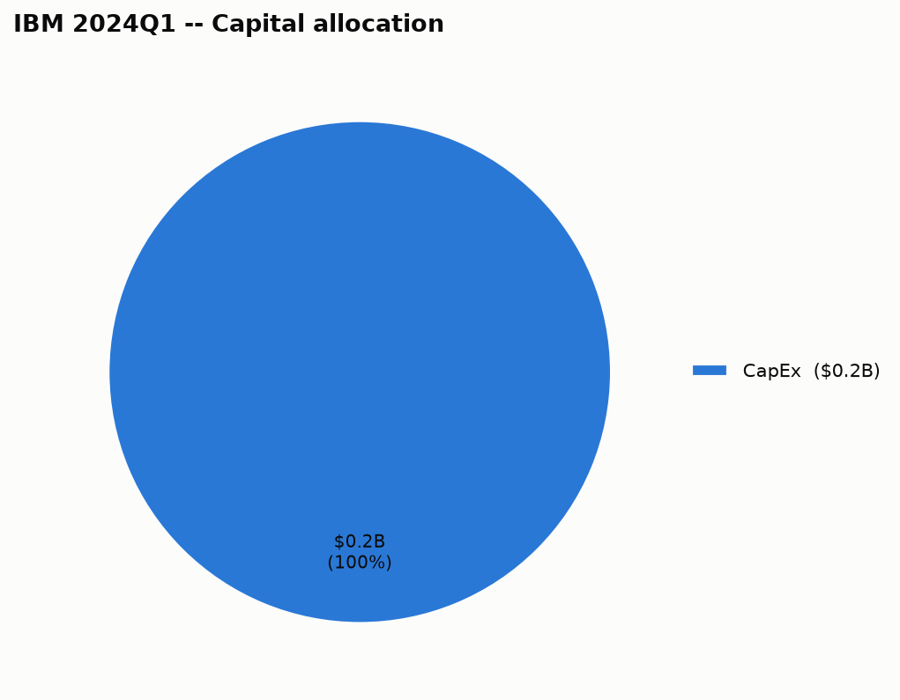

| Use of cash | Amount |
|---|---|
| CapEx | $239.0M |
| This quarter | |
|---|---|
| Total debt | $59.50B |
When it's due: $6.71B in next 12mo, $6.00B in year 2, $5.58B in year 3, $4.45B in year 4, $4.49B in year 5, $34.35B in after 5yr — the aggregate principal-by-year figure International Business Machines Corp files with the SEC (as of 2026-06-30); individual notes (coupon, specific maturity date) aren't broken out at that level in this data.
Then as we layer in, by the end of the year, the HashiCorp advantages of managing the infrastructure across all these environments, we do believe that, that will be an accelerant to the Red Hat portfolio. Consulting in the first quarter, the book of business on Gen AI was 2x all of last year, so I think we're winning in the marketplace. One, strong book-to-bill, winning in key focus areas, strategic partnerships, Gen AI scale overall.